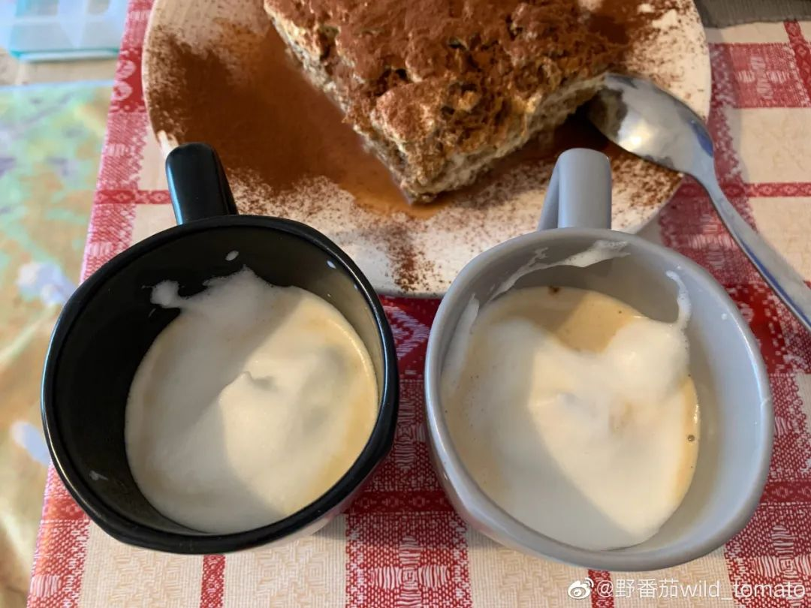
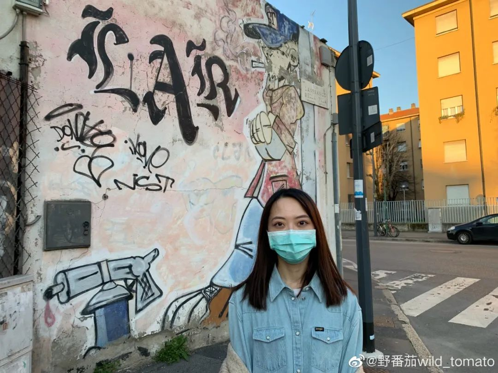

[四十日谈] 秋凉的米兰封城日记-01
原文链接 备份链接 编者荐语： 就像是武汉封城之后，许多网友开始制作自己的视频日记，这让世界了解了武汉的人们的日常与他们面对疫情的许多情绪。四十日谈也正在创建一个平台，用影像使不同国家的人们看到在意大利的人们的状态。秋凉从封城的第0天开始 …
就像是武汉封城之后，许多网友开始制作自己的视频日记，这让世界了解了武汉的人们的日常与他们面对疫情的许多情绪。四十日谈也正在创建一个平台，用影像使不同国家的人们看到在意大利的人们的状态。
- 作者简介 -
秋凉，工作、居住在米兰。
#STUDENTESSA INTERNAZIONALE 留学⽣
#GIORNALISTA INDIPENDENTE 独⽴记者
#CURATRICE D’ARTE 艺术策展⼈
#FEMMINISTA ⼥权主义者
欢迎关注秋凉的公众号：野故事 id：ye-story
或野番茄——中国女权主义者在米兰，微博 @野番茄wild_tomato
以下是秋凉第3天到第5天的米兰封城日记。
点击“阅读原文”看野故事。
- DAY 3 -
万万没想到，意大利居然封国了。今天是在家办公的一天，没有意外的话接下来三天都是。
晒一下在家办公的一日三餐，今天也是忙到没时间好好做饭。今天意大利的病例破万了，朋友的舍友的同事被确诊了，新闻和小道消息都令人窒息。



- DAY 4 -
这两天收到很多国内亲友的问候，我都统一回复“物资充足，请勿担心”。目前意大利的超市、药房、公交都还在正常运作，人们也听从政府的呼吁拉开距离，开始戴上口罩。
晴朗的日子里去附近走了一圈，餐厅、超市、药房等虽然还在营业，但是意大利人已经根据法令的要求，自觉拉来了距离。今天街上戴口罩的人明显增加了，有些戴得不太认真，不时拉开来抽个烟，或者只是遮着口，高鼻子暴露在外面。



- DAY 5 -
在家的每个工作日都是被老板榨干的一天，忙到没时间看新闻，KPI和疫情分不清谁更让人焦虑。
- 推荐阅读 -


野故事
ye-story
野番茄
Weibo @野番茄wild_tomato
ins @wildtomato2020

原文链接 备份链接 编者荐语： 就像是武汉封城之后，许多网友开始制作自己的视频日记，这让世界了解了武汉的人们的日常与他们面对疫情的许多情绪。四十日谈也正在创建一个平台，用影像使不同国家的人们看到在意大利的人们的状态。秋凉从封城的第0天开始 …
原文链接 备份链接 3月8日下午，意大利政府通过了新法令，对伦巴第大区以及十一个邻近省份实行封闭式管理。从当晚零点开始，米兰“封城”了。虽然具体的实施方式和疫情所处的环境比起国内有许多不同，但真实的米兰纠竟是怎样的，米兰的人们怎么面对现在 …
原文链接 备份链接 昨日，米兰有小区突然宣布封闭，我住的城市都灵离米兰大概30多分钟车程，电视里轰天轰地的全是冠状病毒的消息，把人一下就弄晕了，我和家人一个多月前计划的那不勒斯旅游正好是今天开始，我们讨论了一下，决定还是出发，毕竟觉得有疫 …
原文链接 备份链接 3月9日，意大利总理孔特签署全境防疫法令，3月10日，意大利“封国”了。法令规定除必要需求、工作、就医外需避免外出，法令规定情况内的外出需准备个人声明。仅隔一天，意大利其他地区的人们就和米兰“站在了一起”，加入了宅家队 …
原文链接 备份链接 “Dio ha scelto di stare dalla nostra parte.” ********************** 在2月21日之前，意大利新冠肺炎确诊病例仅有3例。然而截至当地时间3月10日，意大 …